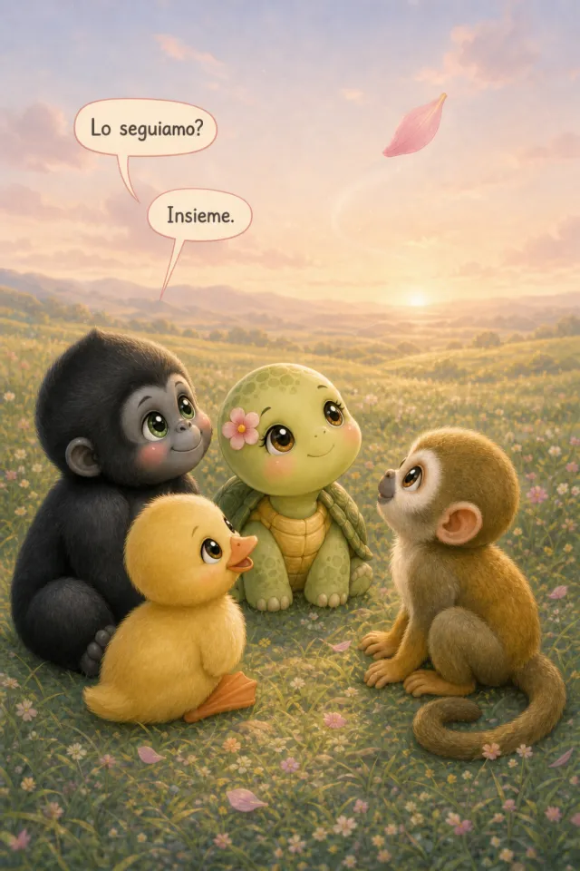
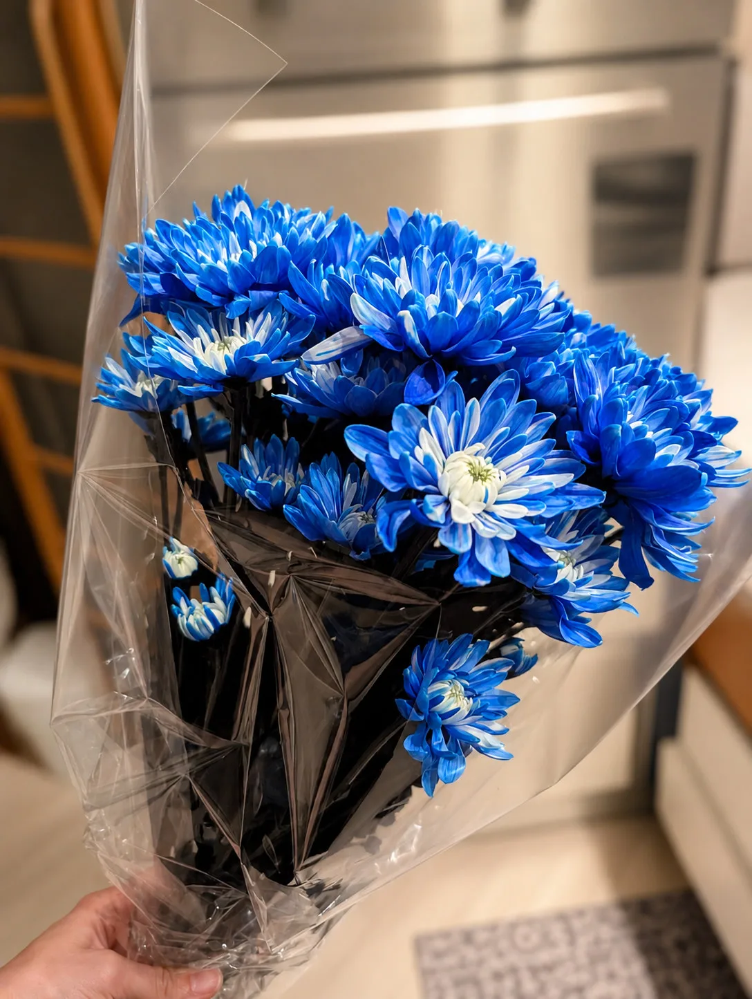
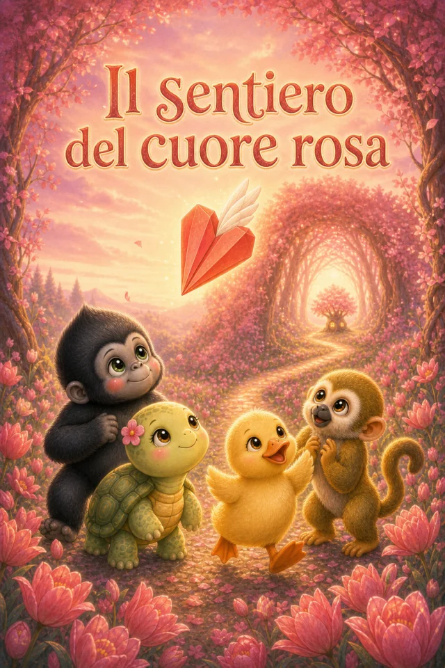
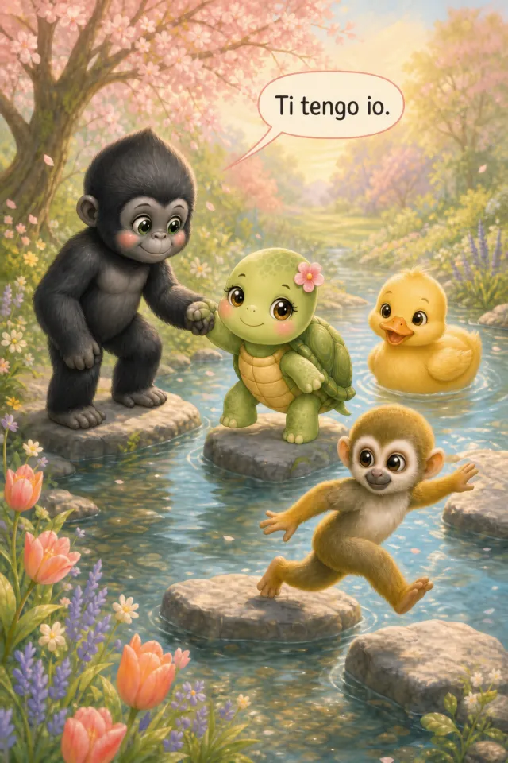
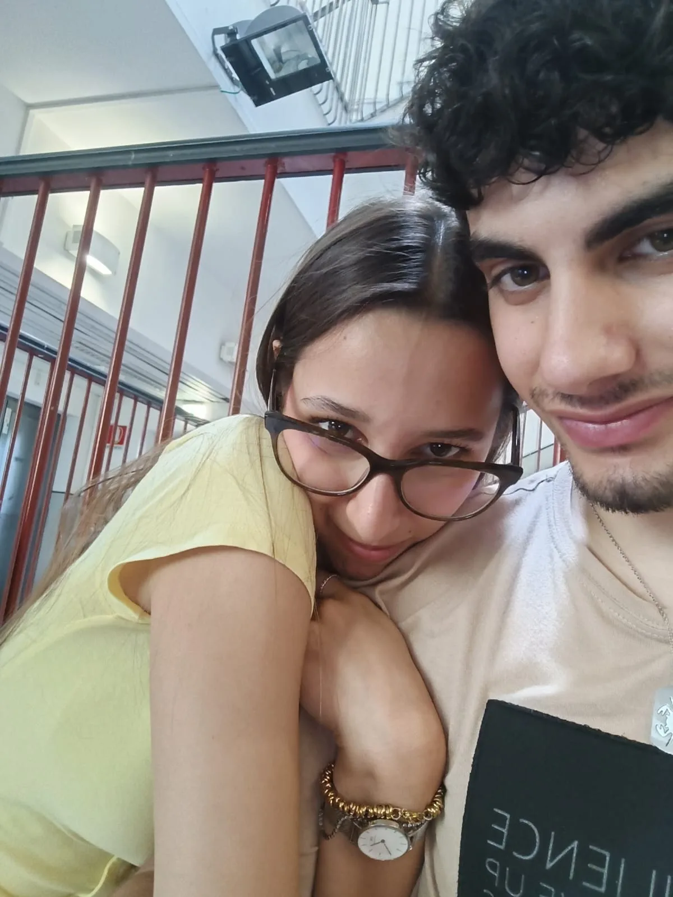
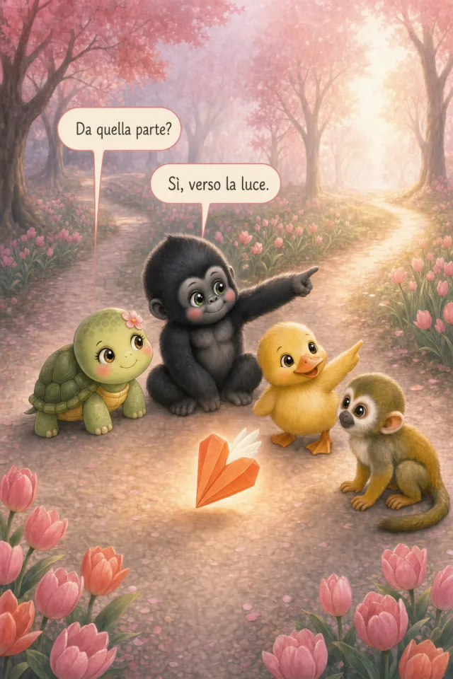
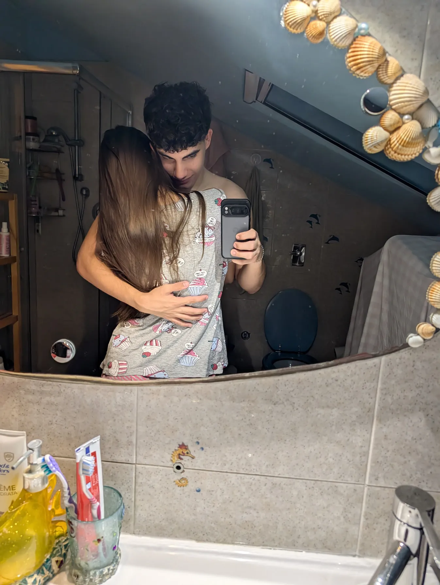
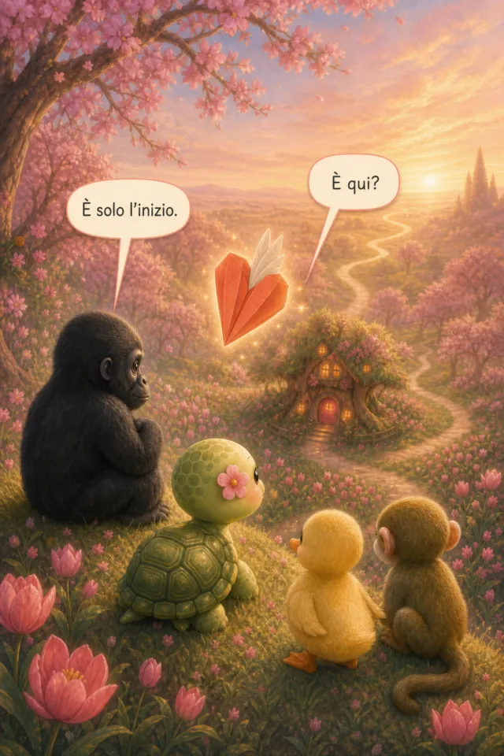
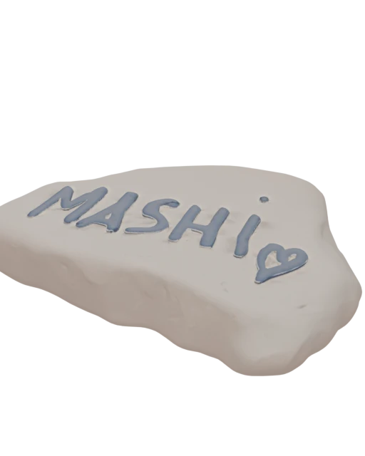

Per te, solo per te — Mashi.
C'è un sentiero che ti aspetta.
Ciao, Trudy.
4 specchi delle nostre personalità, riflessi in animi fanciulleschi che percorrono un sentiero intrigante alla ricerca di qualcosa.... Che cosa?

Ho creato le versioni 3D dei nostri sticker che puoi girare come vuoi con la tua manina e vedere da ogni prospettiva. Shiamo dei veri peluche!
tocca l'altoparlante per sentire le nostre voci
Ho messo alcune delle scene del racconto che potrai leggere interamente.
trascina per sfogliare · tocca per girare la carta







i nostri sassi · gira con la mano

Ecco questa sei te per me
E' stata una grande scelta il tirocinio di Neurobiologia...
😏
Ventisei tavole, una storia intera.
Disegnata pagina per pagina per te, Trudy.
Puoi sfogliarlo qui, oppure portartelo via.